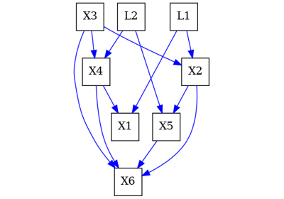
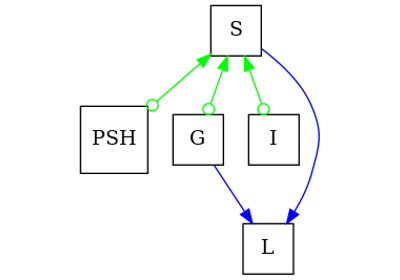
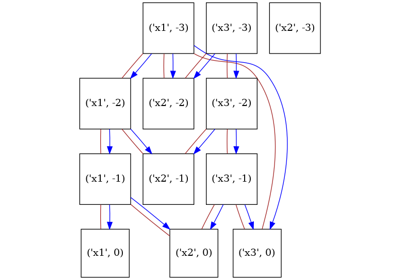

pywhy_graphs.viz.draw#
- pywhy_graphs.viz.draw(G, direction: str | None = None, pos: dict | None = None, name: str | None = None, shape='square', **attrs)[source]#
Visualize the graph.
- Parameters:
- Gpywhy_nx.MixedEdgeGraph
The mixed edge graph.
- directionstr, optional
The direction, by default None. See: https://graphviz.org/docs/attrs/rankdir/.
- posdict, optional
The positions of the nodes keyed by node with (x, y) coordinates as values. By default None, which will use the default layout from graphviz.
- namestr, optional
Label for the generated graph.
- shapestr
The shape of each node. By default ‘square’. Can be ‘circle’, ‘plaintext’.
- attrsdict
Any additional edge attributes (must be strings). For more information, see documentation for GraphViz.
- Returns:
- dotgraphviz.Digraph
DOT language representation of the graph.
Examples using pywhy_graphs.viz.draw#

An introduction to Inducing Paths and how to find them
An introduction to Inducing Paths and how to find them

An introduction to causal graphs and how to use them
An introduction to causal graphs and how to use them

On PAGs and their validity

Drawing graphs and setting their layout for visual comparison
Drawing graphs and setting their layout for visual comparison

Drawing timeseries graphs and setting their layout
Drawing timeseries graphs and setting their layout